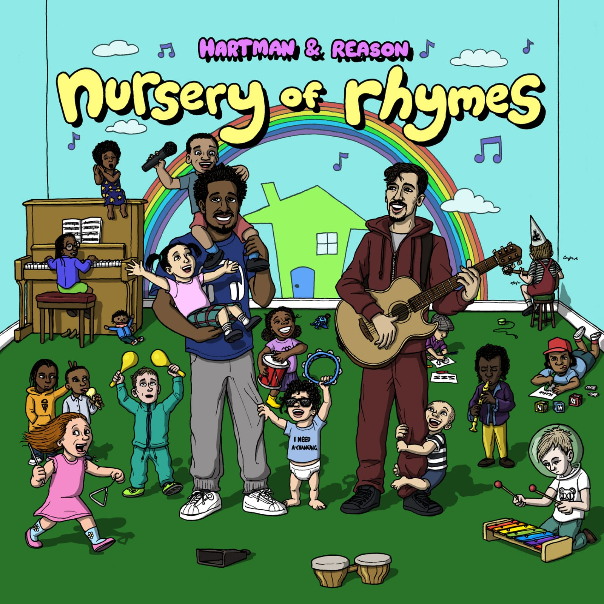

Studio
History
Muscle Memory Musik Studio founded in 2005. Built from the ground up with focus on creative freedom and artist development.
Early foundations: Producers and engineers Young Max and Del aka Sonic formed the initial trio with Louis aka Reason.
Dishy Tangent formed 2012 by Reason & Matt Shilk. Sing Out Loud Sundays founded 2014 by RM Moses with the studio as HQ. Swayla collaboration begins 2019.
Prices
- Dry hire hourly (with audio equipment/interface): £30
- Hourly with engineer: £60
- Podcast room: same rates
- Deposit: 50% of total booking
Equipment / Description / Photos / Video
We have a vast collection of electric & acoustic guitars, vintage and modern pieces, Fenders, Rowland keys, Marshall amps, and state-of-the-art sound equipment.



Podcast Room
Prices
- Dry hire hourly (with audio equipment/interface): £30
- Hourly with engineer: £60
- Deposit: 50% of total booking
Projects / Video / Photos
Podcast projects hosted include Tea Talk and Tottenham, Spanglish, and other artist-led sessions.
Events
- Upcoming Shows
- G-Zone
- S32H
Bookings
- Studio hire
- Band/Artist/DJs
- Podcast room
- Equipment hire
- Lessons
Artist Development
Supporting artists with mentorship, sessions, and programs like Project Accountability and What’s The Point.
- Apply for consultation
- Youth engagement programs: writing, DJing, instruments, confidence, networking
Lessons / Therapy / Youth Work
- Prices for sessions
- Projects: What’s the Point, Project Accountability, Peacock Academy
Label / Collective
Description of Ladder Records and artists.
- Artists / Collective Stats